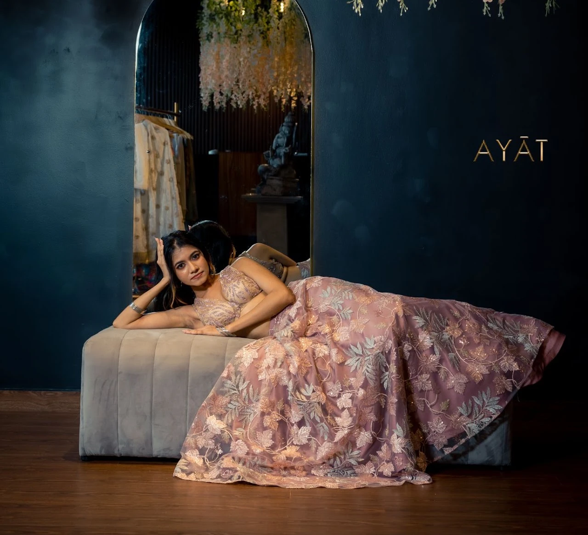
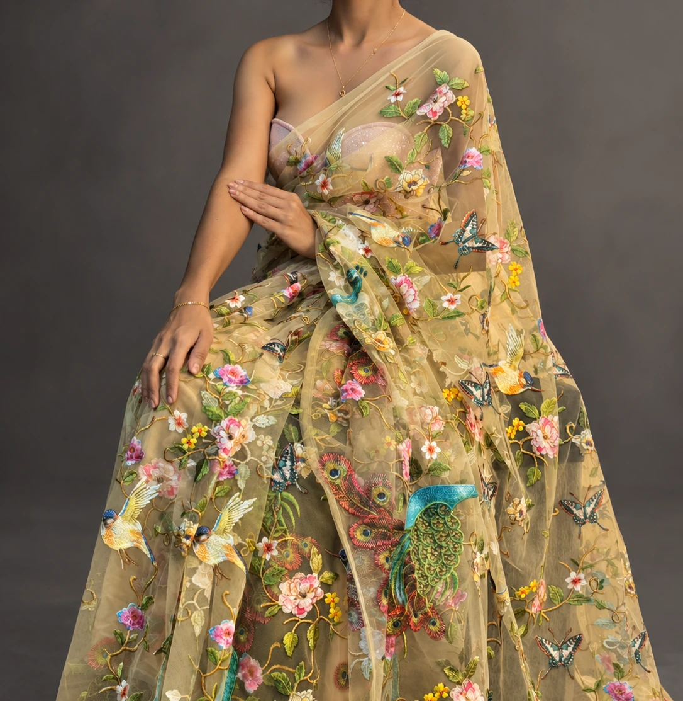
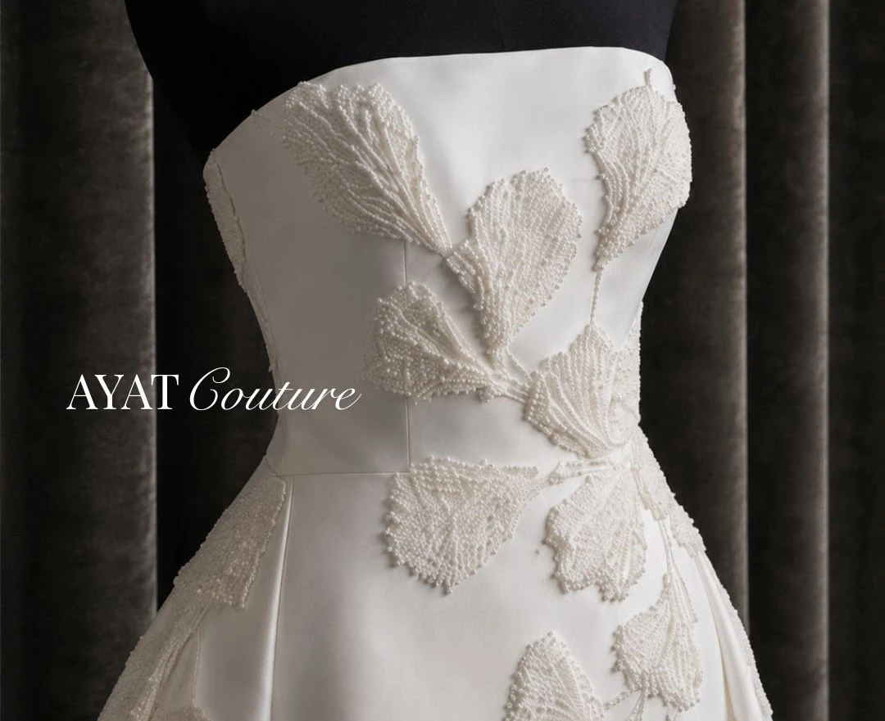
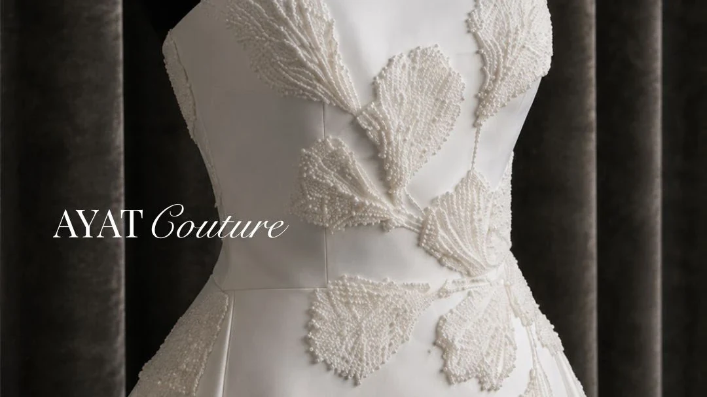
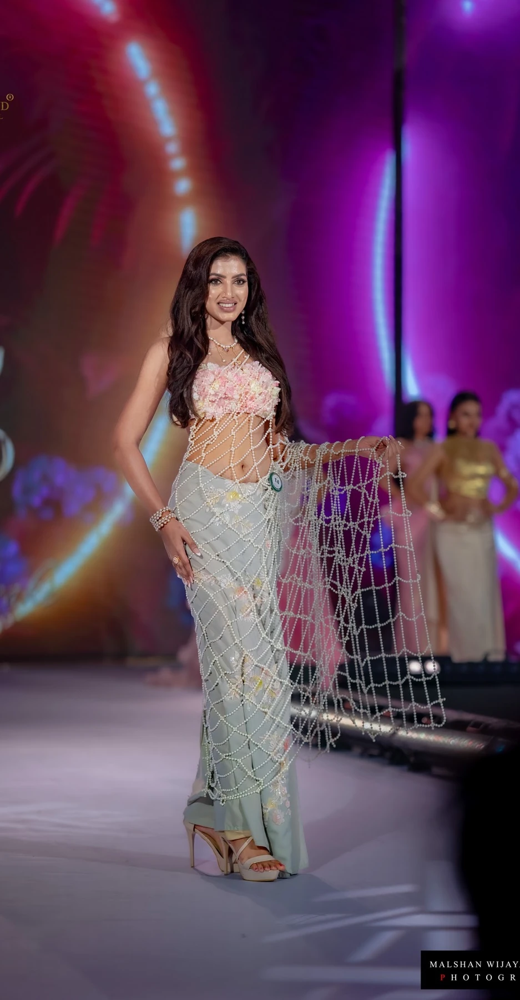
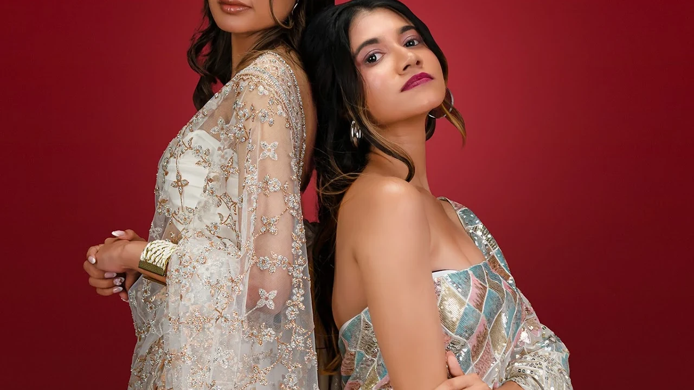
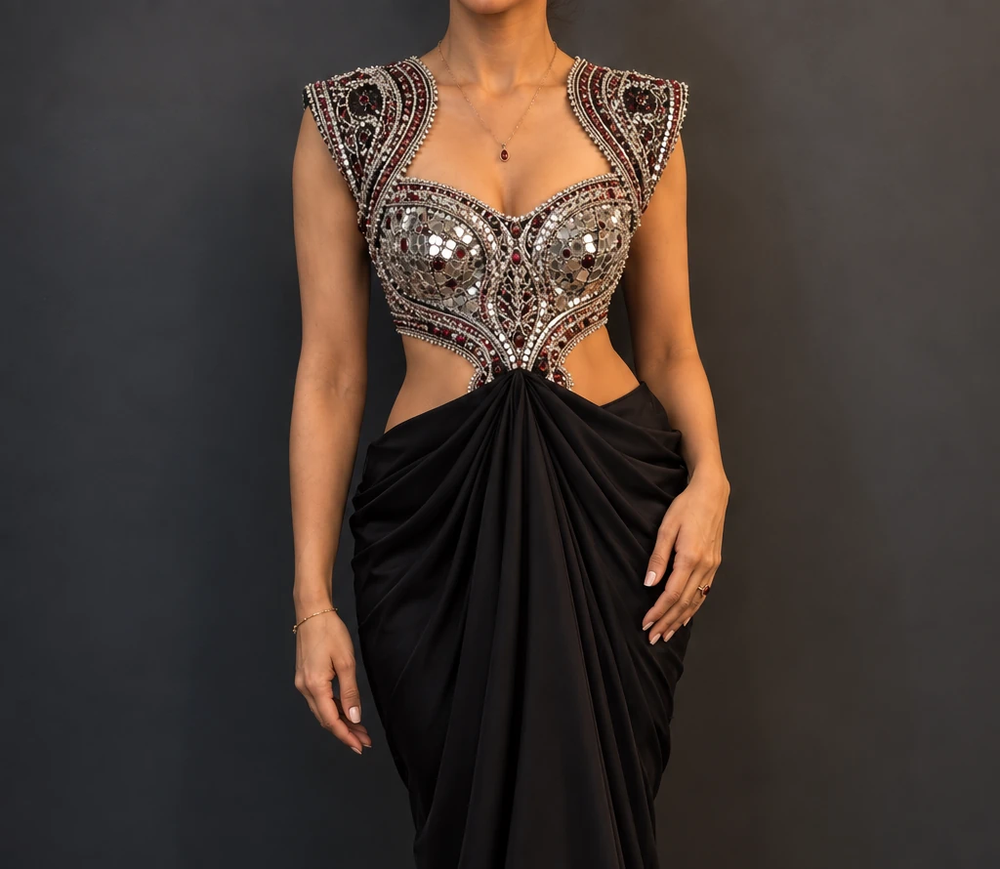

Embroidered narratives
Texture, colour and handwork become the signature rather than decoration.
AYĀT Couture brings together artisanal detail, refined silhouettes and contemporary femininity — from statement sarees to bespoke bridal creations.



The new AYĀT experience is designed like an international fashion house: editorial first, quietly luxurious, and clear about what comes next — shop a ready piece, request a quotation, or begin a private couture appointment.

From first references to fittings and finishing, bridal couture should feel personal. The digital journey now moves naturally from inspiration to a private appointment.
Texture, colour and handwork become the signature rather than decoration.

Silhouettes designed to photograph beautifully and move naturally through an occasion.
The AYĀT digital experience mirrors the couture journey: discover, refine, consult and commission. Every interaction is designed to feel calm, personal and intentional.


For the pieces that matter most, the experience should feel as considered as the garment.Book an AYĀT consultation